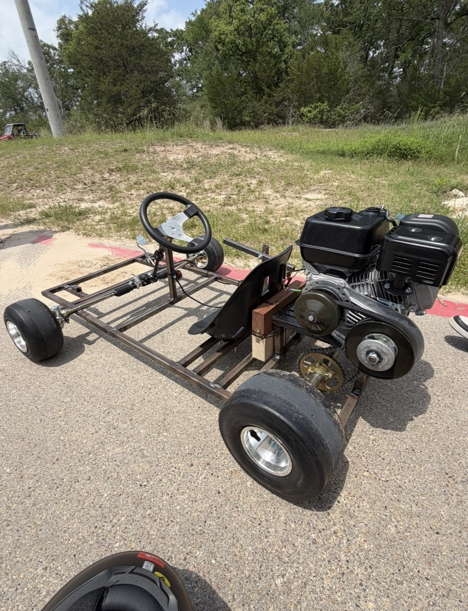
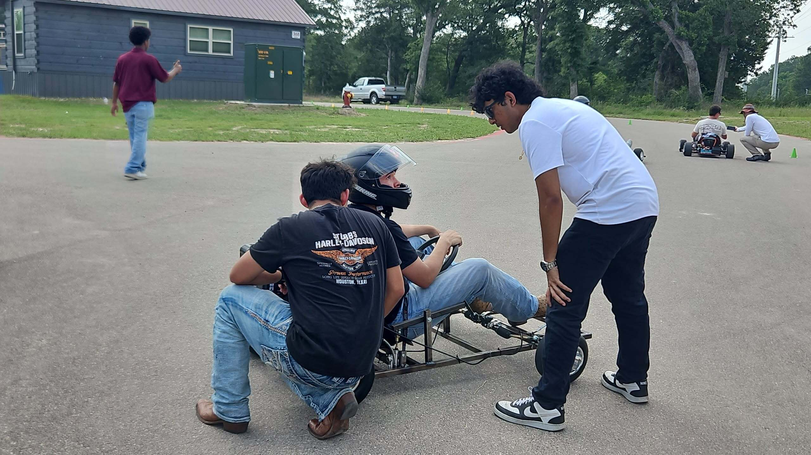
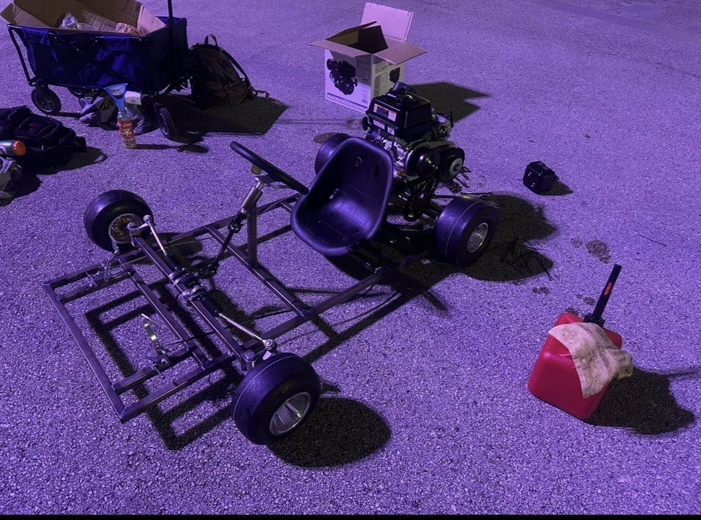
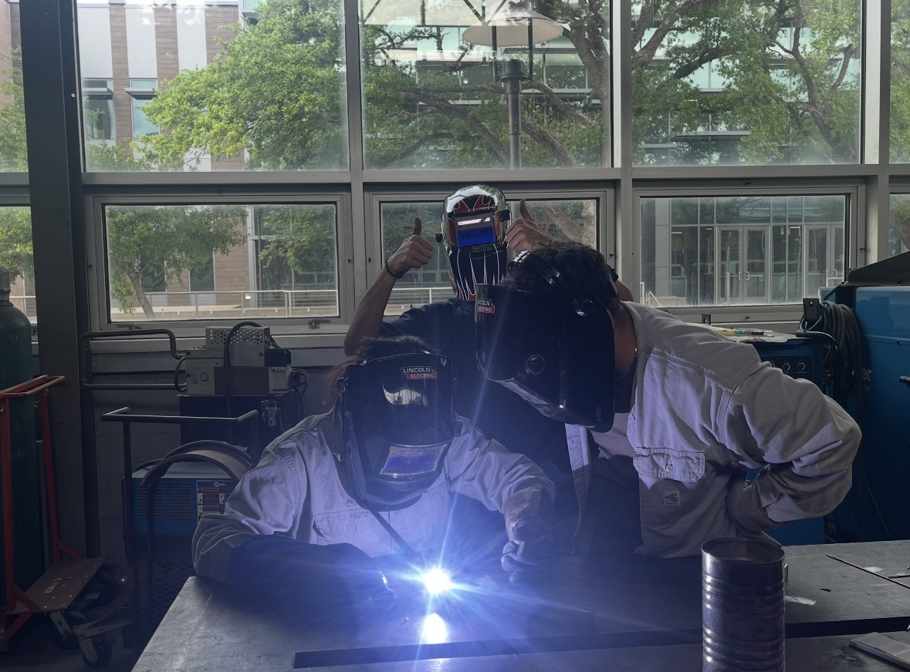
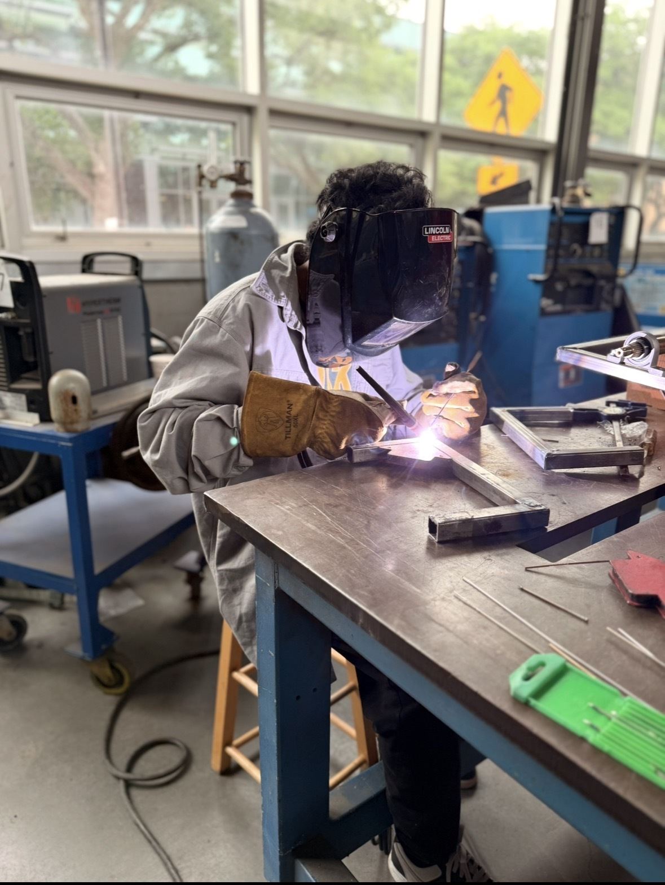

ASME UH • MARCH 2026 — APRIL 2026
ASME Go-Kart
A student-led competition Go-kart designed, fabricated, tested, and raced by the University of Houston ASME project team at Texas A&M University.

OVERVIEW
Building a Competition Go-Kart
The ASME Go-Kart project was a hands-on student engineering project completed for a competition between the University of Houston ASME chapter and Texas A&M ASME.
The project took the Go-kart through fabrication, assembly, testing, troubleshooting, and finally competition, with a strict deadline of 2 months.
MY ROLE
Project Lead
As an ASME Projects Officer, I led the Go-Kart project and coordinated the different vehicle subteams throughout the build.
I oversaw work involving the drivetrain, steering, braking, chassis design, build, and front and rear axle assemblies. I also taught more than 20 students TIG welding and demonstrated techniques for cutting and fabricating metal tubing.
RESULT
Competition Results
PHOTO GALLERY
Design, Build & Competition




COMPETITION